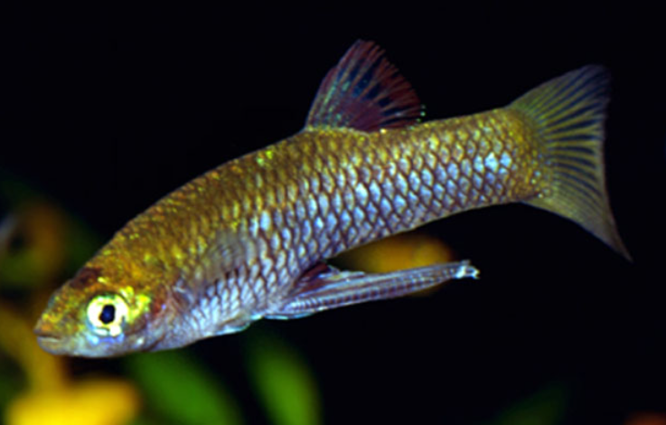
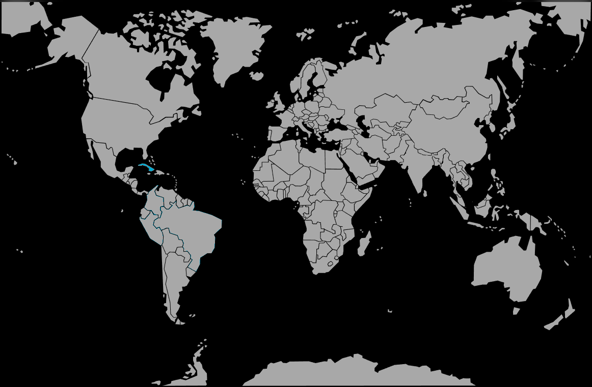

Systématique
- Ordre : Cyprinodontiformes
- Famille : Poeciliidae
- Genre : Girardinus
- Espèce : G. creolus

Girardinus creolus est un petit poisson vivipare endémique de l'île de Cuba, décrit par Garman en 1895. C'est une espèce relativement rare en aquariophilie, souvent éclipsée par son cousin plus commun, Girardinus metallicus.
Il mesure généralement entre 3 et 4 cm pour les mâles et jusqu'à 6 cm pour les femelles. Son corps est allongé, de couleur brunâtre à olivâtre avec un ventre argenté. Contrairement à d'autres espèces du genre qui sont très brillantes, G. creolus présente une coloration plus sobre, souvent ponctuée de marques sombres diffuses sur les flancs.
Il est particulièrement adapté aux environnements rocheux et calcaires typiques de certaines régions montagneuses de Cuba.
C'est un poisson grégaire et paisible, qui apprécie la vie en groupe. Il est actif et occupe toutes les strates de l'aquarium, avec une préférence pour la zone médiane.
Dans la nature, il est parfois retrouvé dans des zones d'eau très calme, voire aux entrées de grottes ou de gouffres inondés (cénotes), ce qui suggère une adaptation à des environnements ombragés. En aquarium, il préfère une lumière tamisée et une végétation dense.
Mode : vivipare.
Comme tous les Poeciliidae, la fécondation est interne. Le mâle utilise son gonopode pour féconder la femelle.
La gestation dure environ 24 à 30 jours. Les femelles libèrent des alevins entièrement formés (généralement entre 10 et 30 par portée). Les parents peuvent prédater leur progéniture si l'aquarium ne dispose pas de suffisamment de cachettes (mousse de Java, plantes flottantes).
Dimorphisme sexuel : Le mâle est nettement plus petit et svelte que la femelle. Il possède un gonopode (nageoire anale modifiée en tube) très long, qui atteint presque l'extrémité de la nageoire caudale, une caractéristique distinctive du genre.
Espérance de vie : Environ 2 à 3 ans.
Il est endémique de Cuba, spécifiquement de la région occidentale (Pinar del Río, Sierra de los Órganos). Il vit dans les ruisseaux de montagne aux eaux claires et fraîches, ainsi que dans les bassins rocheux calcaires. L'eau y est dure et alcaline.
Répartition

Origine naturelle :
- Amérique Centrale (Caraïbes).
- Cuba (Endémique).
- Sierra de los Órganos.
Paramètres de maintenance
Température : 22 à 26 °C (préfère les eaux pas trop chaudes).
pH : 7,0 à 8,0 (eau basique).
GH : 10 à 25 °dGH (eau dure indispensable).
Volume conseillé : Minimum 50 à 60 L pour un petit groupe ou un harem.
Régime alimentaire
Régime : omnivore.
Dans la nature, il se nourrit d'algues, de diatomées, de détritus et de petits invertébrés.
En aquarium, il n'est pas difficile mais nécessite une part végétale dans son alimentation (paillettes à la spiruline) en complément de nourritures vivantes ou congelées (daphnies, artémias).